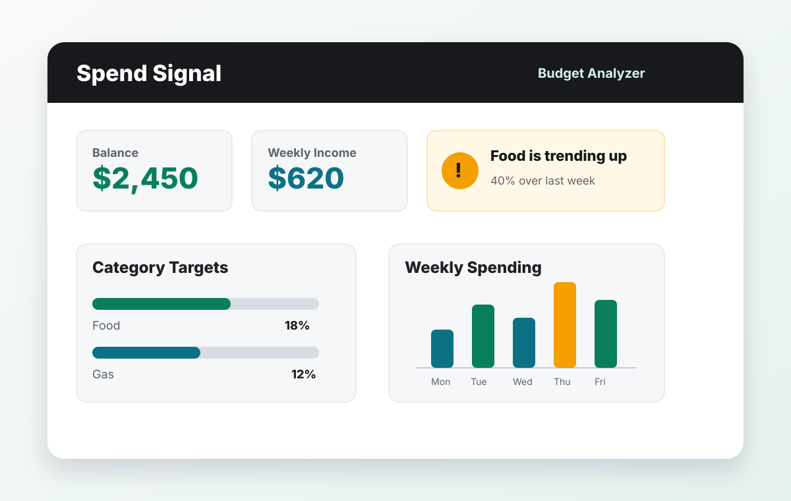
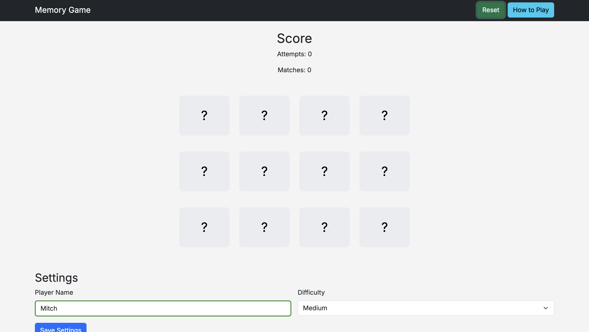

Featured Project
Spend Signal
A spending analyzer that lets users enter their own income, balance, budget percentages, and transactions instead of relying on preset personal data.

Budget decisions with clearer signals
Spend Signal focuses on the parts of personal budgeting that are easiest to miss: category drift, weekly changes, cash runway, and whether current spending lines up with income.
- Flexible income schedules: weekly, bi-weekly, monthly, or yearly.
- Category budgets can use recommendations or custom percentages.
- User-entered transactions drive charts, warnings, filters, and forecasts.
About Me
I am a Computer Information Systems student interested in web development, problem solving, and building tools that make everyday decisions easier.
Submission Links
Previous Coursework
Memory Match Game
An earlier browser game project that helped build the foundation for the final app: layout, interaction, state, and deployment.

Memory Match Game
A single-page matching game built with front-end fundamentals and browser storage.